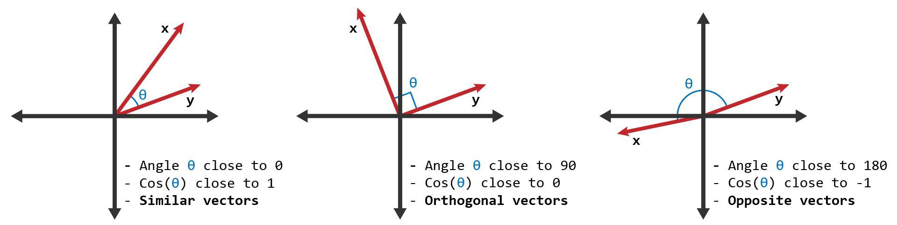
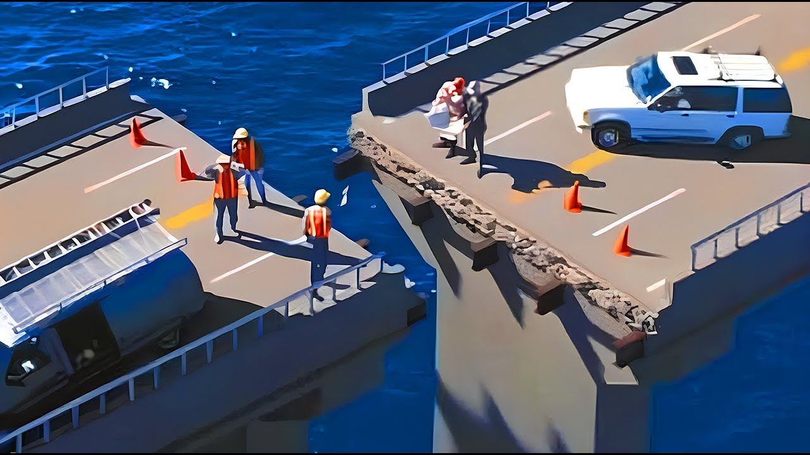

Fullscreen mode
Just press »F« on your keyboard to show your presentation in fullscreen mode. Press the »ESC« key to exit fullscreen mode.
Overview mode
Press "Esc" or "o" keys to toggle the overview mode on and off. While you're in this mode, you can still navigate between slides, as if you were at 1,000 feet above your presentation.
Computational Geometry and Computer Graphics
Lesson 1
Metric space
Metric space
What is a metric?Metric space
Space and how to measureMetric space
Different (d(x) - distance) - how to measure?Metric space
Different d(x)Metric space
Different M - Metric space?Metric space
Different MMetric space
Metric space is an ordered pair (M, d) where M is a set and d is a metric on MMetric space
(M, d) - M - Metric space - where, d - function how to measure.Metric Space Axioms
Metric Space Axioms
1. Identity Axiom: \( d(x, y) = 0 \iff x = y \)
Metric Space Axioms
2. Non-Negativity Axiom: \( d(x, y) \geq 0 \)
Metric Space Axioms
3. Symmetry Axiom: \( d(x, y) = d(y, x) \)
Metric Space Axioms
4. Triangle Axiom (Triangle Inequality): \( d(x, z) \leq d(x, y) + d(y, z) \)
Metric Space Axioms
1. Identity Axiom: \( d(x, y) = 0 \iff x = y \)
2. Non-Negativity Axiom: \( d(x, y) \geq 0 \)
3. Symmetry Axiom: \( d(x, y) = d(y, x) \)
4. Triangle Axiom (Triangle Inequality): \( d(x, z) \leq d(x, y) + d(y, z) \)
When do we use Metric?
38 Parrots
— Два слоненяти, п’ять мавпочок, 38 папуг!
— А в папугах-то я гора-а-аздо довший!
Norm - The magnitude of a vector is also known as the length or norm of the vector
\[ |x| = {\|x\|}_1 \]
The length or norm of the vector
\( \|x\|_1 = |x_1| + |x_2| + \cdots + |x_n| \)
1. Евклідова метрика
Стандартна відстань у просторі:
\[ d(x, y) = \sqrt{(x_1 - y_1)^2 + (x_2 - y_2)^2} \]Приклад: Для точок (1,2) і (4,6):
\[ d((1,2), (4,6)) = \sqrt{(4-1)^2 + (6-2)^2} = \sqrt{9 + 16} = 5 \]Евклидова метрика ( \(L_2\)-норма):
\[ d_2(x, y) = \| x - y \|_2 = \sqrt{\sum_{i=1}^{n} (x_i - y_i)^2} \]
Manhattan city
Manhattan city
Mexico City
https://www.thepolisblog.org/2012/12/urban-morphology-in-mexico-city.html
2. Манхеттенська метрика (L1-норма)
Визначається як сума абсолютних різниць координат:
\[ d(x, y) = |x_1 - y_1| + |x_2 - y_2| \]Приклад: Для тих самих точок:
\[ d((1,2), (4,6)) = |1-4| + |2-6| = 3 + 4 = 7 \]üìå Використовується в навігації по містах із прямокутною забудовою.
Манхэттенская норма ( \(L_1\)-норма):
\[ d_1(x, y) = \| x - y \|_1 = \sum_{i=1}^{n} |x_i - y_i| \]
3. Чебишевська метрика (L∞-норма)
Визначається як найбільша абсолютна різниця між координатами:
\[ d(x, y) = \max(|x_1 - y_1|, |x_2 - y_2|) \]Приклад:
\[ d((1,2), (4,6)) = \max(|1-4|, |2-6|) = \max(3, 4) = 4 \]üìå Використовується в шахах для моделювання ходу короля.
Чебышёвская норма ( \(L_\infty\)-норма):
\[ d_\infty(x, y) = \| x - y \|_\infty = \max_i |x_i - y_i| \]
Wiki - Metrics on Euclidean spaces
4. Косинусна відстань (Cosine distance)
Визначається як міра кутової відмінності між векторами:
\[ d(x, y) = 1 - \text{cosine similarity} = 1 - \cos(\theta) = 1 - \frac{x \cdot y}{\|x\| \cdot \|y\|} \]Приклад: Нехай \( x = (1,2) \), \( y = (4,6) \):
\[ x \cdot y = 1 \cdot 4 + 2 \cdot 6 = 4 + 12 = 16 \] \[ \|x\| = \sqrt{1^2 + 2^2} = \sqrt{5}, \quad \|y\| = \sqrt{4^2 + 6^2} = \sqrt{52} \] \[ d(x, y) = 1 - \frac{16}{\sqrt{5} \cdot \sqrt{52}} \]üìå Використовується у пошуку схожих об'єктів у ШІ.
Cosine similarity
\[ \text{cosine similarity} = S_C(x, y) := \cos(\theta) = \frac{\mathbf{x} \cdot \mathbf{y}}{\|\mathbf{x}\| \|\mathbf{y}\|} \]
 Cosine Similarity - LearnDataSci5. Метрика Хеммінга
Підраховує кількість позицій, у яких символи відрізняються:
\[ d(x, y) = \sum_{i=1}^{n} [x_i \neq y_i] \]Приклад: Для слів 10111011 і 10010011:
üìå Використовується у теорії кодування для виявлення помилок.
When Metric important in practice?
British Gauge War
Buster Keaton "The General" - 1926
Bridges
NASA
https://spacemath.gsfc.nasa.gov/weekly/6Page53.pdfCoastline paradox
https://en.wikipedia.org/wiki/Coastline_paradoxPixel
Pixel (Wikipedia)
Pixel Art (Wikipedia)
Pixel - Measurements on Screen
Pixels Per Inch (PPI) – количество пикселей на дюйм экрана.
DPI (Dots Per Inch) – используется для печати, но иногда применяется и к экранам.
Resolution – общее количество пикселей по ширине и высоте (например, 1920×1080).
Pixels by Polar coordinate system
Hologram fans
Polygon
.gif)
Polygon
Polygons are the fundamental building blocks of 3D computer graphics, representing surfaces using vertices, edges, and faces.
Polygon Mesh (Wikipedia)Polygon - Measurements on Screen
Polygons are measured in terms of vertex count, triangle count, and mesh density.
Level of Detail (LOD) controls how many polygons are displayed depending on distance.
Pixel coverage: A single polygon can span multiple pixels depending on camera projection and resolution.
Console Art - ASCII Graphics
Console Art - ASCII Graphics
ASCII art uses characters to create images and is often seen in retro computer graphics and early digital art.
ASCII Art (Wikipedia)ASCII Graphics - Measurements on Screen
Measured in terms of character grid:
- Screen resolution in characters (e.g., 80×25, 132×43).
- Font size determines how many characters fit on the screen.
- Character aspect ratio affects image proportions.
Voxel (3D Pixel)
Voxel (3D Pixel)
Voxels are volumetric pixels used in 3D graphics, similar to pixels but in a three-dimensional space.
Voxel (Wikipedia)Voxel - Measurements on Screen
Measured in voxel grid resolution:
- Voxel Size: Defined in world space (e.g., 1mm³ per voxel).
- Voxel Density: Number of voxels per unit of space (e.g., 256×256×256).
- Screen Projection: A voxel may occupy multiple screen pixels based on viewing angle and resolution.
E-ink Cell
.gif)
E-ink Cell
E-ink technology mimics the appearance of ink on paper and is commonly used in e-readers.
Electronic Paper (Wikipedia)E-ink - Measurements on Screen
- E-ink screens use pixel-based measurements similar to LCDs.
- Resolution is measured in pixels (e.g., 1448×1072).
- PPI is typically high (e.g., 300 PPI for Kindle Paperwhite).
Ferrolic Screen
The Ferrolic display uses ferrofluid, controlled by magnets, to create dynamic visuals.
Ferrolic Screen (YouTube)Ferrolic Screen - Measurements on Screen
Pixels???Types of Digital Images in Computer Graphics (CG)
- Raster (Bitmap) Images
- Vector Images
- Fractal Graphic
- *ASCII Graphics
- *Multi-layered Images
- *High Dynamic Range (HDR) Images
- *3D Models
1. Raster (Bitmap) Images

1. Raster (Bitmap) Images
Raster images are made up of a grid of pixels, with each pixel having a specific color and intensity. They are typically used for photos and complex images.
- RGB (Red, Green, Blue): Common in digital color images, where each pixel is defined by the combination of these three primary colors.
- Grayscale: Images with varying shades of gray, typically from black to white.
- Indexed Color: Uses a predefined color palette, with each pixel referencing a color in the palette.
- CMYK (Cyan, Magenta, Yellow, Black): Mainly used in printing, using four color channels.
Common Formats: JPEG, PNG, GIF, BMP, TIFF.
1. Problems of Raster (Bitmap) Images
- Anti-aliasing: MSAA, FXAA, SMAA, TAA
- Filtering (Math: Interpolation) (Target: Upscaling) (Overmind: Resampling): Bilinear, Trilinear, Lanczos
- Anti-aliasing + Upscaling: FSR, DLSS
Anti-aliasing (MSAA, FXAA, SMAA, TAA)?
Anti-aliasing (MSAA, FXAA, SMAA, TAA)
Anti-aliasing (MSAA, FXAA, SMAA, TAA)
Anti-aliasing (MSAA, FXAA, SMAA, TAA)

Anti-aliasing (MSAA, FXAA, SMAA, TAA)
Filtering: Bilinear, Trilinear, Lanczos
Filtering: Bilinear, Trilinear, Lanczos
https://bartwronski.com/2020/04/14/bilinear-texture-filtering-artifacts-alternatives-and-frequency-domain-analysis/- > Filtering
- > Math: Interpolation
- > Target: Upscaling
- > Overmind: Resampling
Anti-aliasing + Upscaling: FSR, DLSS
https://www.overclockers.ua/video/amd-fidelityfx-super-resolution/ https://www.nvidia.com/en-us/geforce/news/nvidia-dlss-2-0-a-big-leap-in-ai-rendering/2. Vector Images
2. Vector Images
Vector images are created using mathematical equations to define geometric shapes. They are resolution-independent and can be scaled infinitely without losing quality.
Common Formats: SVG, EPS, TTF, PDF, AI (Adobe Illustrator).
2. Vector Images: TTF
https://ru.wikipedia.org/wiki/TrueType2. Vector Images: SVG
https://de.wikipedia.org/wiki/Scalable_Vector_Graphics2. Vector Images: SVG
<svg width="150" height="150" xmlns="http://www.w3.org/2000/svg">
<circle cx="75" cy="75" r="50" fill="red" fill-opacity="0.5" stroke="red" stroke-width="2"/>
</svg>
Vector_Circle.svg
{kind=link}
2. Vector Images: SVG

https://www.svgrepo.com/
2. Vector Images: SVG

2. Vector Images: SVG

2. Vector Images: SVG animation
<svg width="200" height="180" xmlns="http://www.w3.org/2000/svg">
<rect x="30" y="30" height="110" width="110" style="stroke:green;fill:red">
<animateTransform
attributeName="transform"
begin="0s"
dur="10s"
type="rotate"
from="0 85 85"
to="360 85 85"
repeatCount="indefinite" />
</rect>
</svg>
2. Vector Images: SVG animation
Math function image
https://www.desmos.com/art“Creation and Destruction” от Alex Dang, United States
https://www.desmos.com/calculator/mdqhuvrsux“Sunset” от Andrew Black, United States
https://www.desmos.com/calculator/yicqy4xung3. Fractals

3. Fractals
Fractals are complex, self-replicating structures that can be generated using mathematical formulas. They are often used to create intricate patterns and textures in CG.
Common Formats: PNG, JPEG (after rendering), fractal-specific files like .fsc (for some fractal software).
3. Fractals vs SVG?
3. Fractals
Links: